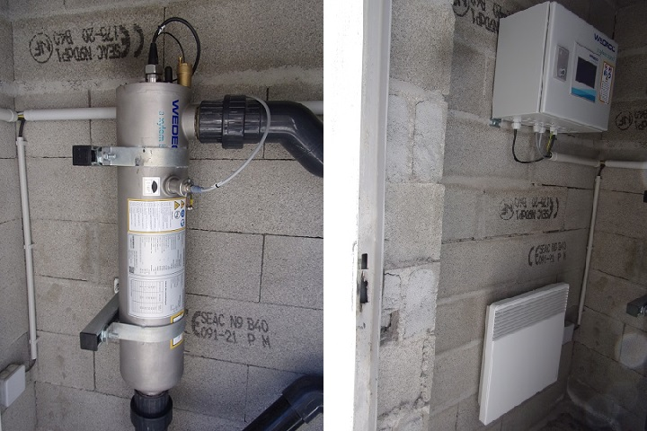

Promenade habituelle des martinlysois, de par sa proximité avec le village, même s'il faut avoir du souffle car le chemin est pentu. Prendre le chemin du col de St Martin et suivre le ruisseau de la Pount, grimper 200 mètres à peu près, pour arriver à la résurgence. Il y a, à la saison, le long du chemin, la possibilité de cueillir des asperges sauvages.
Autrefois un système ingénieux de canalisations permettait de détourner partiellement l'eau de la source pour irriguer certaines parcelles de terrain à tour de rôle.

Le déversoir - trop plein


La citerne
La girouette permet d'assurer le contrôle de l'ajout de chlore à l'eau de source

La résurgence - point de captage
(Mettre l'oreille sur la petite grille couleur brique et écouter la puissance)
Les restes du moulin (rajouter la photo des ruines...)
trop insuffisant quand la population est passée à 400, il a disparu naturellement.
Jusqu'au début du XXes les habitants s'alimentaient en eau en allant puiser à l'Aude, eau potable alimentaire ou sanitaire. L'eau du ruisseau étant utilisée pour l'irrigation, il était à sec au niveau du village pendant environ 4 mois par an et donc généralement inutilisable pour le besoin des villageois.
Ce n'est qu'en 1899 que le conseil municipal réussit à se mettre d'accord pour installer la première fontaine publique au niveau du pont lavoir, après avoir fait faire une étude de potabilité de l'eau de la source (voir aussi le dossier suivant).

Décision initiale (1899) du conseil municipal de construire une fontaine publique (voir la retranscription dans le registre des affaires municipales - 11 juin 1899), suivi de celle du 28 décembre 1899et de celle du 06 février 1900
Mais cette décision, même si obtient l'unanimité du conseil municipal, n'obtient pas l'adhésion de tous les propriétaires. En effet certains craignent pour l'irrigation de leur terrain rive gauche du Pount. D'où la transmission du courrier suivant au préfet de l'Aude.

Protestation de quelques propriétaires (02 mars 1900) contre la fontaine publique
Ce courrier fut rapidement suivi par une pétition d'opposants ayant reçu 13 attestations (certaines réalisées pour des personnes ne sachant pas signer)
En réponse, la préfecture a dû diligenter une enquête. Les arguments de l'enquêteur : eau de l'Aude parfois polluée ou trouble, l'eau du ruisseau pas utilisable, le bassin de captage empêchera l'infiltration de l'eau et donc moins de perte d'eau de la source et donc potentiellement même plus d'eau pour irriguer, des opposants au conseil municipal avec des haines personnelles : La décision du conseil municipal est justifiée, la fontaine est d'utilité publique.
Le conseil municipal put donc enfin confirmer sa décision initiale et valider la création de la fontaine.

Réponse du 19 avril 1900 par le conseil municipal aux objections pour la création de la fontaine publique (voir la retranscription dans le registre des affaires municipales - 19 avril 1900)
Ensuite, les travaux furent validé par un architecte qui réévalua de 300 francs la somme à payer
Le conseil d'hygiène du département valida la fontaine et les travaux purent commencer.
Je n'ai pas trouvé les plans des travaux (que ce soit général, au niveau du bassin de captage, ou au niveau du pont lavoir...).
(Voir pour un plan général celui de 1922 ci-dessous)
l'adjudication a eu lieu 18 août 1900, dirigée par le maire, 4 propositions déposées, l'adjudicataire est le mieux disant Babou François
La réception des travaux a été réalisée le 26 décembre 1900


Procès verbal de réception et décompte de la fontaine publique du 26/12/1900
Le des fonds est demandé par le conseil municipal le 15 janvier 1901 suivi du remboursement du cautionnement
En 1912, il fut prévu de rajouter 3 fontaines, mais il ne me semble pas que les travaux aient aboutis (je n'ai pas vu non plus de plan pour ces travaux)

Décision (1912) du conseil municipal pour l'ajout de 3 fontaines
Les travaux initiaux ne devaient pas être très solides car dès 1922, une réfection de la canalisation sur une grande partie de sa longueur a du être réalisée.
En 1922, rénovation de la conduite d'eau
Plan général montrant l'ensemble de l'installation
(Le dossier de cette réfection va durer du 12 février 1922 au 18 octobre 1922 - 7 mois de démarches administratives pour 2 mois de travaux...)
Le 30 juin 1925, une nouvelle tranche de travaux est décidée par le conseil municipal d'alimenter en eau de source la rive gauche de l'Aude (Fontaine au niveau de l'intersection entre la nationale et le chemin de Quirbajou)

En 1925, plan pour prolongation du réseau rive gauche

En 1926, affiche pour l'adjudication des travaux pour prolonger le réseau d'eau rive gauche
La réception définitive de ces travaux est faite le 28 juin 1927.
Voir le dossier complet sur cette prolongation de la canalisation d'eau.
Aujourd'hui tous les logements sont raccordés au réseau - les documents relatifs à ce raccordement sont sûrement à découvrir aux archives départementales...
Depuis fin 2021, en remplacement de l'ajout automatique de chlore, particulière complexe à tunner, une lampe à UV a été mise en place.
Un local pour contenir cette lampe a été contruit en face de la maison la plus haute du village sur le chemin de la source.
Le local contenant la lampe à UV, le compteur d'eau, le tableau de commande de la lampe (lumière verte si OK)
La lampe à UV est contenue dans ce gros cylindre. Le local doit être maintenue hors gel, d'où la présence de ce radiateur.
1 Archives départementales de l'Aude - 2OP2781